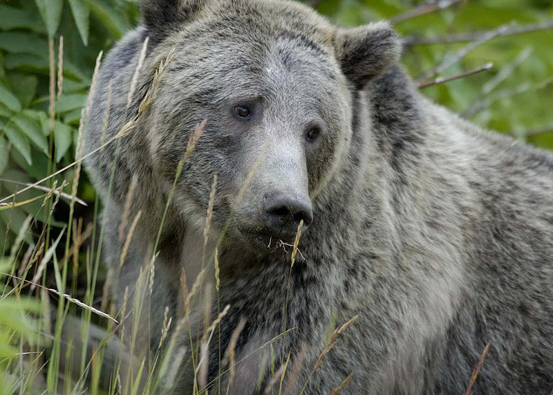
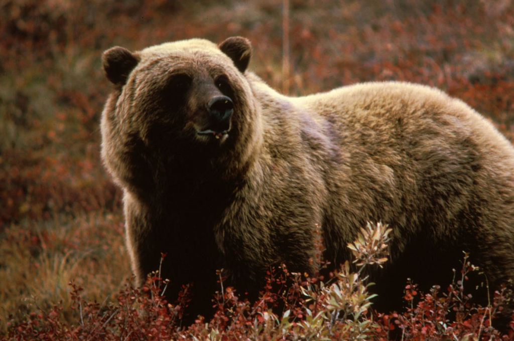

Мечката гризли (Ursus arctos horribilis) е подвид на кафявата мечка и е разпространена в западните райони на Северна Америка (предимно Аляска и западна Канада). Значително по-едра е от черната и кафявата. На дължина достига до 280 cm, а на тегло до 500 kg. Храни се с горски плодове, корени, пчелен мед, но понякога яде насекоми, птици, дребни бозайници, риба, както и по-едри животни – лос, едър рогат добитък, а понякога и бизони. Гризли е най-едрият, най-свирепият и силен хищник в Северна Америка.
Подобно на бялата и кафявата мечка, изпада продължително време в летаргия през зимата, като преди това качва доста килограми, за да натрупа достатъчно мазнина. Живее около 30 години.
Когато са млади, могат да се катерят по дърветата. Могат с лекота да преплуват широки реки, а също така умело да ловуват риба. До съвсем скоро гризли са под закона за защита[1][2] и съществуват в някои национални паркове в САЩ. През година женските индивиди раждат от 1 до 4 мечета (най-често 2), които тежат само около половин килограм.
MORE CARNIVORS